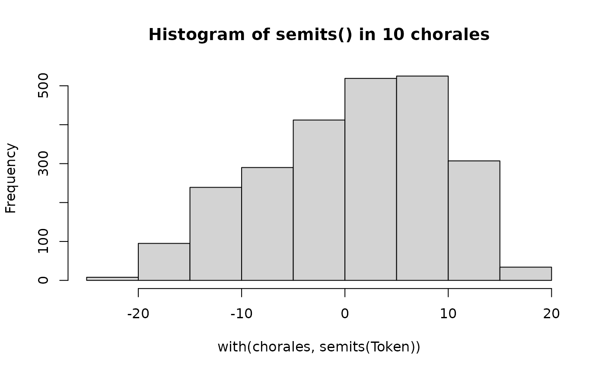
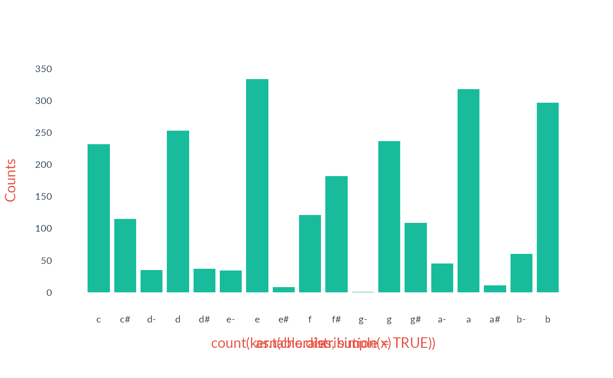
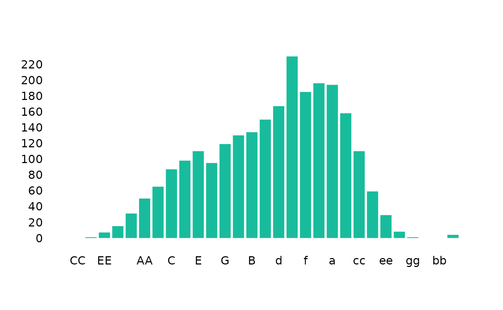
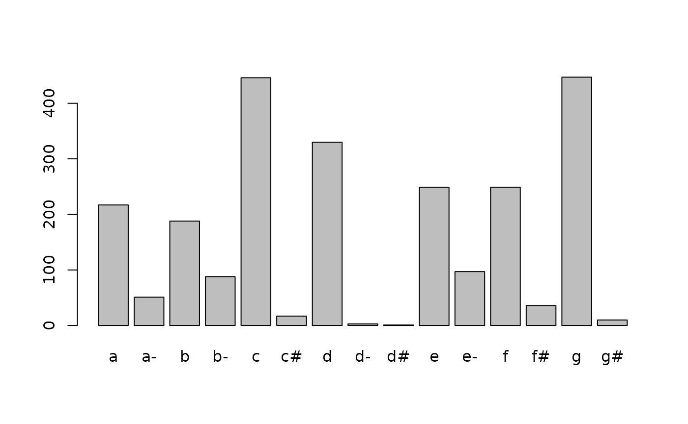
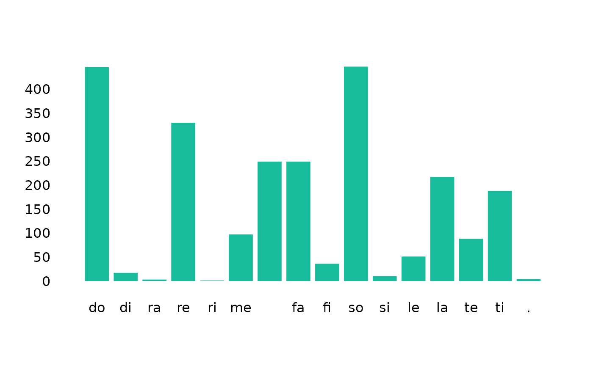

Pitch and tonality in humdrumR
Nathaniel Condit-Schultz
2023-03-10
Source:vignettes/PitchAndTonality.Rmd
PitchAndTonality.RmdAs a computational musicology toolkit, humdrum\(_{\mathbb{R}}\)’s tools for analyzing and manipulating pitch data are just about the most important tools in the toolbox. For the most part, humdrum\(_{\mathbb{R}}\)’s pitch tools are focused on the Western system of tonality, and tools for representing pitches in a tonal context are the focus of this vignette—we also have standard tools for looking at pitch from a Western, 12-tone atonal setting as well.
Pitches and Intervals
Humdrum\(_{\mathbb{R}}\) defines a
suite of “pitch functions,” like kern(),
solfa(), interval(), and
semits(). These functions all work in essentially the same
way: they take in an input argument and output pitch information in
their own particular format. For example, let’s take a little bit of
**kern data:
input <- c('4.c', '8d', '4e', '2.g')Notice that this data has both rhythmic information (4.,
8, 4, 2.) and pitch
information (c, d, e,
g). What happens if we give this data to our “pitch
functions”?:
kern(input)
> **kern
> [1] c d e g
interval(input)
> **interval
> [1] P1 +M2 +M3 +P5
semits(input)
> **semits
> [1] 0 2 4 7
solfa(input)
> **solfa
> [1] do re mi soEach function correctly reads the **kern pitch
information, ignoring the rhythm information, and outputs the pitch
information in a different format. This allows us to “translate” between
different ways of representing pitch information.
If you want to keep the non-pitch (rhythm) information, use
the inPlace argument:
kern(input, inPlace = TRUE)
> [1] "4.c" "8d" "4e" "2.g"
interval(input, inPlace = TRUE)
> [1] "4.P1" "8+M2" "4+M3" "2.+P5"
semits(input, inPlace = TRUE)
> [1] "4.0" "82" "44" "2.7"
solfa(input, inPlace = TRUE)
> [1] "4.do" "8re" "4mi" "2.so"The cool thing is that each of these functions can read any of the other function’s output. So you can do things like:
kern('Cb6')
> **kern
> [1] ccc-
pitch("eee-")
> **pitch
> [1] Eb6
pitch(-4) # semits
> **pitch
> [1] Ab3
kern('-4')
> **kern
> [1] G
solfa('A#6')
> **solfa
> [1] ^^li
semits('Ab3')
> **semits
> [1] -4The complete list of basic pitch functions is:
-
Tonal pitch representations
-
Absolute pitch representations
kernpitchlilypondhelmholtz-
tonh(German-style notation)
-
Relative pitch representations
interval-
solfa(relative-do solfege) -
solfg(French-style fixed-do solfege) -
degree(absolute scale degrees) -
deg(melodic scale degrees) -
bhatk(hindustani swara)
-
Partial pitch representations
stepaccidentalqualityoctave
-
Absolute pitch representations
-
Atonal pitch representations
-
Musical pitch representations
semitsmidicents-
pc(pitch classes)
-
Physical pitch representations
freq
-
Musical pitch representations
Each one of these functions represents a different way of representing equivalent pitch information.
Documentation
The global documentation for all the pitch functions can be
seen by calling ?pitchFunctions. You can also call
documentation for any individual function, like ?kern.
Scale degree
Some pitch representations encode scale degree,
which depends on the key. We can use the Key argument to
control how our pitch functions interpet key—either translating
from degrees to absolute pitches, or vice versa. Pass the
Key argument a humdrum key interpretation, like
c: (c minor) or A-: (a-flat major).
absoluteInput <- c('c', 'd-', 'e-', 'g', 'a-')
solfa(absoluteInput)
> **solfa
> [1] do ra me so le
solfa(absoluteInput, Key = 'A-:')
> **solfa
> [1] vmi vfa vso vti do
degreeInput <- c('do', 're', 'mi', 'fi', 'so')
kern(degreeInput)
> **kern
> [1] c d e f# g
kern(degreeInput, Key = 'A-:')
> **kern
> [1] a- b- cc dd ee-The Key argument is vectorized (see the R primer if you don’t know what that means!);
that means that you can actually read information with
different/changing keys.
Working with pitch representations
Let’s have a look at using pitch functions on real data. Let’s load humdrum\(_{\mathbb{R}}\)’s built-in Bach chorales:
chorales <- readHumdrum(humdrumRroot, 'HumdrumData/BachChorales/.*krn')These chorales are full of **kern data in the (default)
Token field, which can easily be parsed/translated. Maybe
we’d like to convert the **kern to semitones:
within(chorales, semits(Token))
> ############################# vvv chor001.krn vvv #############################
> 1: !!!COM: Bach, Johann Sebastian
> 2: !!!CDT: 1685/02/21/-1750/07/28/
> 3: !!!OTL@@DE: Aus meines Herzens Grunde
> 4: !!!OTL@EN: From the Depths of My Heart
> 5: !!!SCT: BWV 269
> 6: !!!PC#: 1
> 7: !!!AGN: chorale
> 8: **semits **semits **semits **semits
> 9: *ICvox *ICvox *ICvox *ICvox
> 10: *Ibass *Itenor *Ialto *Isoprn
> 11: *I"Bass *I"Tenor *I"Alto *I"Soprano
> 12: *>[A,A,B] *>[A,A,B] *>[A,A,B] *>[A,A,B]
> 13: *>norep[A,B] *>norep[A,B] *>norep[A,B] *>norep[A,B]
> 14: *>A *>A *>A *>A
> 15: *clefF4 *clefGv2 *clefG2 *clefG2
> 16: *k[f#] *k[f#] *k[f#] *k[f#]
> 17: *G: *G: *G: *G:
> 18: *M3/4 *M3/4 *M3/4 *M3/4
> 19: *MM100 *MM100 *MM100 *MM100
> 20: -17 -1 2 7
> 21: =1 =1 =1 =1
> 22: -5 -1 2 7
> 23: -8 0 4 .
> 24: . -1 . .
> 25: -6 -3 2 14
> 26: =2 =2 =2 =2
> 27: -5 -5 2 11
> 28: -10 -6 . .
> 29: . . . 9
> 30: -8 -5 -1 7
> 31: =3 =3 =3 =3
> 32: -12 0 4 7
> 33: . -1 2 .
> 34: -13 0 4 .
> 35: -15 . 6 9
> 36: -17 2 7 11
> 37: =4 =4 =4 =4
> 38: -10 2 6 9
> 39: -17 2 7 11
> 40: =5 =5 =5 =5
> 41-133:::::::::::::::::::::::::::::::::::::::::::::::::::::::::::::::::::::::::
> ############################# ^^^ chor001.krn ^^^ #############################
>
> (8 more files...)
>
> ############################# vvv chor010.krn vvv #############################
> 1-60:::::::::::::::::::::::::::::::::::::::::::::::::::::::::::::::::::::::::
> 61: -15 0 4 9
> 62: -3 4 9 12
> 63: =9 =9 =9 =9
> 64: -8 4 7 11
> 65: -10 4 7 12
> 66: -12 . . .
> 67: -13 2 7 14
> 68: . . 5 .
> 69: -12 0 4 7
> 70: =10 =10 =10 =10
> 71: -10 -6 2 11
> 72: . -5 . .
> 73: -10 . 0 9
> 74: . -6 . .
> 75: -17 -5 -1 7
> 76: =11 =11 =11 =11
> 77: -12 -5 4 7
> 78: -15 -3 4 12
> 79: -8 -4 4 11
> 80: . . 2 .
> 81: =12 =12 =12 =12
> 82: -7 -3 0 9
> 83: -12 -5 0 4
> 84: -14 -5 2 7
> 85: -15 -3 . 5
> 86: =13 =13 =13 =13
> 87: -16 -1 2 4
> 88: -15 -3 0 .
> 89: -20 -4 -1 .
> 90: == == == ==
> 91: *- *- *- *-
> 92: !!!hum2abc: -Q ''
> 93: !!!title: @{PC#}. @{OTL@@DE}
> 94: !!!YOR1: 371 vierstimmige Choralgesänge von Johann Sebastian B***
> 95: !!!YOR2: 4th ed. by Alfred Dörffel (Leipzig: Breitkopf und H&a***
> 96: !!!YOR2: c.1875). 178 pp. Plate "V.A.10". reprint: J.S. Bach, 371 ***
> 97: !!!YOR4: Chorales (New York: Associated Music Publishers, Inc., c.1***
> 98: !!!SMS: B&H, 4th ed, Alfred Dörffel, c.1875, plate V.A.10
> 99: !!!EED: Craig Stuart Sapp
> 100: !!!EEV: 2009/05/22
> ############################# ^^^ chor010.krn ^^^ #############################
> (***four global comments truncated due to screen size***)
>
> humdrumR corpus of ten files.
> Data fields:
> Token :: character
> *Result1 :: integerWe could then, for instance, make a histogram of the semitone values:

Keys
The chorale dataset has key information in its built-in
Key field. If we use a pitch function in
with() or within(), they will
automatically pass the Key field as
Key argument to the function! That means if we apply
solfa(), we will get the correct scale degrees, given the
keys in the data:
within(chorales, solfa(Token))
> ############################# vvv chor001.krn vvv #############################
> 1: !!!COM: Bach, Johann Sebastian
> 2: !!!CDT: 1685/02/21/-1750/07/28/
> 3: !!!OTL@@DE: Aus meines Herzens Grunde
> 4: !!!OTL@EN: From the Depths of My Heart
> 5: !!!SCT: BWV 269
> 6: !!!PC#: 1
> 7: !!!AGN: chorale
> 8: **solfa **solfa **solfa **solfa
> 9: *ICvox *ICvox *ICvox *ICvox
> 10: *Ibass *Itenor *Ialto *Isoprn
> 11: *I"Bass *I"Tenor *I"Alto *I"Soprano
> 12: *>[A,A,B] *>[A,A,B] *>[A,A,B] *>[A,A,B]
> 13: *>norep[A,B] *>norep[A,B] *>norep[A,B] *>norep[A,B]
> 14: *>A *>A *>A *>A
> 15: *clefF4 *clefGv2 *clefG2 *clefG2
> 16: *k[f#] *k[f#] *k[f#] *k[f#]
> 17: *G: *G: *G: *G:
> 18: *M3/4 *M3/4 *M3/4 *M3/4
> 19: *MM100 *MM100 *MM100 *MM100
> 20: vvdo vmi vso do
> 21: =1 =1 =1 =1
> 22: vdo vmi vso do
> 23: vvla vfa vla .
> 24: . vmi . .
> 25: vvti vre vso so
> 26: =2 =2 =2 =2
> 27: vdo vdo vso mi
> 28: vvso vvti . .
> 29: . . . re
> 30: vvla vdo vmi do
> 31: =3 =3 =3 =3
> 32: vvfa vfa vla do
> 33: . vmi vso .
> 34: vvmi vfa vla .
> 35: vvre . vti re
> 36: vvdo vso do mi
> 37: =4 =4 =4 =4
> 38: vvso vso vti re
> 39: vvdo vso do mi
> 40: =5 =5 =5 =5
> 41-133:::::::::::::::::::::::::::::::::::::::::::::::::::::::::::::::::::::::::
> ############################# ^^^ chor001.krn ^^^ #############################
>
> (8 more files...)
>
> ############################# vvv chor010.krn vvv #############################
> 1-60:::::::::::::::::::::::::::::::::::::::::::::::::::::::::::::::::::::::::
> 61: vvdo vme vso do
> 62: vdo vso do me
> 63: =9 =9 =9 =9
> 64: vvso vso vte re
> 65: vvfa vso vte me
> 66: vvme . . .
> 67: vvre vfa vte fa
> 68: . . vle .
> 69: vvme vme vso vte
> 70: =10 =10 =10 =10
> 71: vvfa vvla vfa re
> 72: . vvte . .
> 73: vvfa . vme do
> 74: . vvla . .
> 75: vvvte vvte vre vte
> 76: =11 =11 =11 =11
> 77: vvme vvte vso vte
> 78: vvdo vdo vso me
> 79: vvso vvti vso re
> 80: . . vfa .
> 81: =12 =12 =12 =12
> 82: vvle vdo vme do
> 83: vvme vvte vme vso
> 84: vvra vvte vfa vte
> 85: vvdo vdo . vle
> 86: =13 =13 =13 =13
> 87: vvvti vre vfa vso
> 88: vvdo vdo vme .
> 89: vvvso vvti vre .
> 90: == == == ==
> 91: *- *- *- *-
> 92: !!!hum2abc: -Q ''
> 93: !!!title: @{PC#}. @{OTL@@DE}
> 94: !!!YOR1: 371 vierstimmige Choralgesänge von Johann Sebastian B***
> 95: !!!YOR2: 4th ed. by Alfred Dörffel (Leipzig: Breitkopf und H&a***
> 96: !!!YOR2: c.1875). 178 pp. Plate "V.A.10". reprint: J.S. Bach, 371 ***
> 97: !!!YOR4: Chorales (New York: Associated Music Publishers, Inc., c.1***
> 98: !!!SMS: B&H, 4th ed, Alfred Dörffel, c.1875, plate V.A.10
> 99: !!!EED: Craig Stuart Sapp
> 100: !!!EEV: 2009/05/22
> ############################# ^^^ chor010.krn ^^^ #############################
> (***four global comments truncated due to screen size***)
>
> humdrumR corpus of ten files.
> Data fields:
> Token :: character
> *Result1 :: characterRests
**kern data, like in these chorales, includes
rests, indicated by r in place of a pitch. What
happens when a pitch function sees a rest in our data? Let’s see:
The rest token, is output as a null (NA) value. In fact,
any token in the input which fails to parse as pitch will return as
NA/.. For example,
Pitch arguments
Since all the “pitch functions” do the same sort of task, they share
a number of common arguments. The complete list of these pitch arguments
can be found in the ?pitchParsing and
?pitchDeparsing man pages, but the most important ones are
described here:
Generic vs Specific pitch
All pitch functions accept logical (TRUE or
FALSE) generic and specific
arguments. If generic == TRUE, the only generic pitch
information is returned. This affects different pitch representations in
different ways:
- For representations like
kern(),pitch()andlilypond(), no accidentals are included in generic output; - For
intervals(), the interval quality is removed; - For
solfa, scale degree four will be “fa”, never “fi” (sharp four).
The specific argument is simply the opposite of
generic, so have the choice of indicating
genric = TRUE or specific = FALSE—they are
equivalent.
In code:
input <- c('E', 'G#', 'A', 'B-', 'F#', 'G')
pitch(input, generic = FALSE)
> **pitch
> [1] E3 G#3 A3 Bb3 F#3 G3
pitch(input, generic = TRUE)
> **pitch
> [1] E3 G3 A3 B3 F3 G3
interval(input, specific = TRUE)
> **interval
> [1] -m6 -d4 -m3 -M2 -d5 -P4
interval(input, generic = TRUE)
> **interval
> [1] -6 -4 -3 -2 -5 -4
solfa(input, specific = TRUE)
> **solfa
> [1] vmi vsi vla vte vfi vso
solfa(input, specific = FALSE)
> **solfa
> [1] vmi vso vla vti vfa vsoSimple vs Compound pitch
All pitch functions accept logical (TRUE or
FALSE) simple and compound
arguments. If simple == TRUE, octave information is
stripped from the output, leaving only “simple” pitch information. This
affects different pitch representations in different ways:
- For
pitch()anddegree(), the octave number is removed. - For
lilypond()andhelmholtz(), the octave marks'and,are removed. - For
solfa()anddeg(), the contour indicators (explanation below)vand^are removed. - For
interval(), only steps between 1–7 and reterned (i.e., no 10ths).
The compound argument is simply the opposite of
simple, so have the choice of indicating
simple = TRUE or compound = FALSE—they are
equivalent.
In code:
input <- c('c', 'a', 'dd#', 'ee', 'G', 'GG', 'GG-', 'CCC')
degree(input, simple = FALSE)
> **degree
> [1] 1/4 6/4 2+/5 3/5 5/3 5/2 5-/2 1/1
degree(input, simple = TRUE)
> **degree
> [1] 1 6 2+ 3 5 5 5- 1
lilypond(input, compound = TRUE)
> **lilypond
> [1] c' a' dis'' e'' g g, ges, c,,
lilypond(input, simple = TRUE)
> **lilypond
> [1] c a dis e g g ges c
semits(input, compound = TRUE)
> **semits
> [1] 0 9 15 16 -5 -17 -18 -36
semits(input, compound = FALSE)
> **semits
> [1] 0 9 3 4 7 7 6 0
solfa(input, compound = TRUE)
> **solfa
> [1] do la ^ri ^mi vso vvso vvse vvvdo
solfa(input, compound = FALSE)
> **solfa
> [1] do la ri mi so so se do
interval(input, simple = FALSE)
> **interval
> [1] P1 +M6 +A9 +M10 -P4 -P11 -A11 -P22
interval(input, simple = TRUE)
> **interval
> [1] P1 +M6 +A2 +M3 -P4 -P4 -A4 -P1Working with pitch arguments
The generic and simple arguments useful if
you want to tabulate pitch classes, for example:
chorales <- readHumdrum(humdrumRroot, 'HumdrumData/BachChorales/.*krn')
with(chorales, kern(Token, simple = TRUE)) |> table() |> barplot()

Transposition
All of humdrum\(_{\mathbb{R}}\)’s
pitch functions have built-in transposition functionality. You can use
this functionality by passing arguments to a transpose()
call, inside the pitch function call, like in this example
using the by argument:
Another option is to transpose by key. You can pass the
transpose() command a to argument. Let’s say
we have music in A major that we’d like to transpose to C
major:
Amelody <- c('8A', '8B', '4.c#', '16d', '8c#','8f#', '8e', '8d#', '4e')
kern(Amelody, Key = 'A:', transpose(to = 'C:'))
> **kern
> [1] C D E F E A G F# GSo the Key argument to kern() indicates the
key the music is coming from, and the to argument in
tranpose() indicates where to transpose it to. Since
with/within calls automatically use
Key information from a data set, this makes it very easy
to, say, transpose all **kern tokens in your data to C
major:
chorales <- readHumdrum(humdrumRroot, 'HumdrumData/BachChorales/.*krn')
with(chorales, kern(Token, transpose(to = 'C:'), simple = TRUE)) |> table() |> barplot()
This looks exactly like calling solfa() itself:

Melody and Harmony
Melodic Intervals
What if we want to calculate melodic intervals in each part of a
score? This the purpose of the mint() (melodic intervals)
command. We can use mint() on any pitch data:
input <- c('d', 'B-', 'A', 'G', 'D', 'd', 'B-', 'G#', 'A', 'f', 'e', 'd')
mint(input)
> **interval
> [1] [d] -M3 -m2 -M2 -P4 +P8 -M3 -d3 +m2 +m6 -m2 -M2If you use mint() in
with/within call on a humdrum\(_{\mathbb{R}}\) dataobject,
mint() will automatically be called within each spine/path
in each file (this is accomplished using the groupby
argument to mint()):
chorales <- readHumdrum(humdrumRroot, 'HumdrumData/BachChorales/.*krn')
within(chorales, mint(Token))
> ############################# vvv chor001.krn vvv #############################
> 1: !!!COM: Bach, Johann Sebastian
> 2: !!!CDT: 1685/02/21/-1750/07/28/
> 3: !!!OTL@@DE: Aus meines Herzens Grunde
> 4: !!!OTL@EN: From the Depths of My Heart
> 5: !!!SCT: BWV 269
> 6: !!!PC#: 1
> 7: !!!AGN: chorale
> 8: **interval **interval **interval **interval
> 9: *ICvox *ICvox *ICvox *ICvox
> 10: *Ibass *Itenor *Ialto *Isoprn
> 11: *I"Bass *I"Tenor *I"Alto *I"Soprano
> 12: *>[A,A,B] *>[A,A,B] *>[A,A,B] *>[A,A,B]
> 13: *>norep[A,B] *>norep[A,B] *>norep[A,B] *>norep[A,B]
> 14: *>A *>A *>A *>A
> 15: *clefF4 *clefGv2 *clefG2 *clefG2
> 16: *k[f#] *k[f#] *k[f#] *k[f#]
> 17: *G: *G: *G: *G:
> 18: *M3/4 *M3/4 *M3/4 *M3/4
> 19: *MM100 *MM100 *MM100 *MM100
> 20: [GG] [B] [d] [g]
> 21: =1 =1 =1 =1
> 22: +P8 P1 P1 P1
> 23: -m3 +m2 +M2 .
> 24: . -m2 . .
> 25: +M2 -M2 -M2 +P5
> 26: =2 =2 =2 =2
> 27: +m2 -M2 P1 -m3
> 28: -P4 -m2 . .
> 29: . . . -M2
> 30: +M2 +m2 -m3 -M2
> 31: =3 =3 =3 =3
> 32: -M3 +P4 +P4 P1
> 33: . -m2 -M2 .
> 34: -m2 +m2 +M2 .
> 35: -M2 . +M2 +M2
> 36: -M2 +M2 +m2 +M2
> 37: =4 =4 =4 =4
> 38: +P5 P1 -m2 -M2
> 39: -P5 P1 +m2 +M2
> 40: =5 =5 =5 =5
> 41-133:::::::::::::::::::::::::::::::::::::::::::::::::::::::::::::::::::::::::
> ############################# ^^^ chor001.krn ^^^ #############################
>
> (8 more files...)
>
> ############################# vvv chor010.krn vvv #############################
> 1-60:::::::::::::::::::::::::::::::::::::::::::::::::::::::::::::::::::::::::
> 61: -P5 +m2 -M3 -M2
> 62: +P8 +M3 +P4 +m3
> 63: =9 =9 =9 =9
> 64: -P4 P1 -M2 -m2
> 65: -M2 P1 P1 +m2
> 66: -M2 . . .
> 67: -m2 -M2 P1 +M2
> 68: . . -M2 .
> 69: +m2 -M2 -m2 -P5
> 70: =10 =10 =10 =10
> 71: +M2 -d5 -M2 +M3
> 72: . +m2 . .
> 73: P1 . -M2 -M2
> 74: . -m2 . .
> 75: -P5 +m2 -m2 -M2
> 76: =11 =11 =11 =11
> 77: +P4 P1 +P4 P1
> 78: -m3 +M2 P1 +P4
> 79: +P5 -m2 P1 -m2
> 80: . . -M2 .
> 81: =12 =12 =12 =12
> 82: +m2 +m2 -M2 -M2
> 83: -P4 -M2 P1 -P4
> 84: -M2 P1 +M2 +m3
> 85: -m2 +M2 . -M2
> 86: =13 =13 =13 =13
> 87: -m2 +M2 P1 -m2
> 88: +m2 -M2 -M2 .
> 89: -P4 -m2 -m2 .
> 90: == == == ==
> 91: *- *- *- *-
> 92: !!!hum2abc: -Q ''
> 93: !!!title: @{PC#}. @{OTL@@DE}
> 94: !!!YOR1: 371 vierstimmige Choralgesänge von Johann Sebastian B***
> 95: !!!YOR2: 4th ed. by Alfred Dörffel (Leipzig: Breitkopf und H&a***
> 96: !!!YOR2: c.1875). 178 pp. Plate "V.A.10". reprint: J.S. Bach, 371 ***
> 97: !!!YOR4: Chorales (New York: Associated Music Publishers, Inc., c.1***
> 98: !!!SMS: B&H, 4th ed, Alfred Dörffel, c.1875, plate V.A.10
> 99: !!!EED: Craig Stuart Sapp
> 100: !!!EEV: 2009/05/22
> ############################# ^^^ chor010.krn ^^^ #############################
> (***four global comments truncated due to screen size***)
>
> humdrumR corpus of ten files.
> Data fields:
> Token :: character
> *Result1 :: charactermint() has a number of special options, which you can
read about in the manual by checking out ?mint. For now,
we’ll just show you the classify argument, which can be
used to classify output intervals as either Unison,
Step, Skip, or Leap:
within(chorales, mint(Token, classify = TRUE))
> ############################# vvv chor001.krn vvv #############################
> 1: !!!COM: Bach, Johann Sebastian
> 2: !!!CDT: 1685/02/21/-1750/07/28/
> 3: !!!OTL@@DE: Aus meines Herzens Grunde
> 4: !!!OTL@EN: From the Depths of My Heart
> 5: !!!SCT: BWV 269
> 6: !!!PC#: 1
> 7: !!!AGN: chorale
> 8: **kern **kern **kern **kern
> 9: *ICvox *ICvox *ICvox *ICvox
> 10: *Ibass *Itenor *Ialto *Isoprn
> 11: *I"Bass *I"Tenor *I"Alto *I"Soprano
> 12: *>[A,A,B] *>[A,A,B] *>[A,A,B] *>[A,A,B]
> 13: *>norep[A,B] *>norep[A,B] *>norep[A,B] *>norep[A,B]
> 14: *>A *>A *>A *>A
> 15: *clefF4 *clefGv2 *clefG2 *clefG2
> 16: *k[f#] *k[f#] *k[f#] *k[f#]
> 17: *G: *G: *G: *G:
> 18: *M3/4 *M3/4 *M3/4 *M3/4
> 19: *MM100 *MM100 *MM100 *MM100
> 20: [GG] [B] [d] [g]
> 21: =1 =1 =1 =1
> 22: +Unison Unison Unison Unison
> 23: -Skip +Step +Step .
> 24: . -Step . .
> 25: +Step -Step -Step +Leap
> 26: =2 =2 =2 =2
> 27: +Step -Step Unison -Skip
> 28: -Leap -Step . .
> 29: . . . -Step
> 30: +Step +Step -Skip -Step
> 31: =3 =3 =3 =3
> 32: -Skip +Leap +Leap Unison
> 33: . -Step -Step .
> 34: -Step +Step +Step .
> 35: -Step . +Step +Step
> 36: -Step +Step +Step +Step
> 37: =4 =4 =4 =4
> 38: +Leap Unison -Step -Step
> 39: -Leap Unison +Step +Step
> 40: =5 =5 =5 =5
> 41-133:::::::::::::::::::::::::::::::::::::::::::::::::::::::::::::::::::::::::
> ############################# ^^^ chor001.krn ^^^ #############################
>
> (8 more files...)
>
> ############################# vvv chor010.krn vvv #############################
> 1-60:::::::::::::::::::::::::::::::::::::::::::::::::::::::::::::::::::::::::
> 61: -Leap +Step -Skip -Step
> 62: +Unison +Skip +Leap +Skip
> 63: =9 =9 =9 =9
> 64: -Leap Unison -Step -Step
> 65: -Step Unison Unison +Step
> 66: -Step . . .
> 67: -Step -Step Unison +Step
> 68: . . -Step .
> 69: +Step -Step -Step -Leap
> 70: =10 =10 =10 =10
> 71: +Step -Leap -Step +Skip
> 72: . +Step . .
> 73: Unison . -Step -Step
> 74: . -Step . .
> 75: -Leap +Step -Step -Step
> 76: =11 =11 =11 =11
> 77: +Leap Unison +Leap Unison
> 78: -Skip +Step Unison +Leap
> 79: +Leap -Step Unison -Step
> 80: . . -Step .
> 81: =12 =12 =12 =12
> 82: +Step +Step -Step -Step
> 83: -Leap -Step Unison -Leap
> 84: -Step Unison +Step +Skip
> 85: -Step +Step . -Step
> 86: =13 =13 =13 =13
> 87: -Step +Step Unison -Step
> 88: +Step -Step -Step .
> 89: -Leap -Step -Step .
> 90: == == == ==
> 91: *- *- *- *-
> 92: !!!hum2abc: -Q ''
> 93: !!!title: @{PC#}. @{OTL@@DE}
> 94: !!!YOR1: 371 vierstimmige Choralgesänge von Johann Sebastian B***
> 95: !!!YOR2: 4th ed. by Alfred Dörffel (Leipzig: Breitkopf und H&a***
> 96: !!!YOR2: c.1875). 178 pp. Plate "V.A.10". reprint: J.S. Bach, 371 ***
> 97: !!!YOR4: Chorales (New York: Associated Music Publishers, Inc., c.1***
> 98: !!!SMS: B&H, 4th ed, Alfred Dörffel, c.1875, plate V.A.10
> 99: !!!EED: Craig Stuart Sapp
> 100: !!!EEV: 2009/05/22
> ############################# ^^^ chor010.krn ^^^ #############################
> (***four global comments truncated due to screen size***)
>
> humdrumR corpus of ten files.
> Data fields:
> Token :: character
> *Result1 :: characterHarmonic intervals
In parallel to mint() is hint() (harmonic
intervals) command. hint() works just like
mint() except it calculates intervals from left to right in
each record of a file:
within(chorales, hint(Token))
> ############################# vvv chor001.krn vvv #############################
> 1: !!!COM: Bach, Johann Sebastian
> 2: !!!CDT: 1685/02/21/-1750/07/28/
> 3: !!!OTL@@DE: Aus meines Herzens Grunde
> 4: !!!OTL@EN: From the Depths of My Heart
> 5: !!!SCT: BWV 269
> 6: !!!PC#: 1
> 7: !!!AGN: chorale
> 8: **interval **interval **interval **interval
> 9: *ICvox *ICvox *ICvox *ICvox
> 10: *Ibass *Itenor *Ialto *Isoprn
> 11: *I"Bass *I"Tenor *I"Alto *I"Soprano
> 12: *>[A,A,B] *>[A,A,B] *>[A,A,B] *>[A,A,B]
> 13: *>norep[A,B] *>norep[A,B] *>norep[A,B] *>norep[A,B]
> 14: *>A *>A *>A *>A
> 15: *clefF4 *clefGv2 *clefG2 *clefG2
> 16: *k[f#] *k[f#] *k[f#] *k[f#]
> 17: *G: *G: *G: *G:
> 18: *M3/4 *M3/4 *M3/4 *M3/4
> 19: *MM100 *MM100 *MM100 *MM100
> 20: [GG] +M10 +m3 +P4
> 21: =1 =1 =1 =1
> 22: [G] +M3 +m3 +P4
> 23: [E] +m6 +M3 .
> 24: . [B] . .
> 25: [F#] +m3 +P4 +P8
> 26: =2 =2 =2 =2
> 27: [G] P1 +P5 +M6
> 28: [D] +M3 . .
> 29: . . . [a]
> 30: [E] +m3 +M3 +m6
> 31: =3 =3 =3 =3
> 32: [C] +P8 +M3 +m3
> 33: . [B] +m3 .
> 34: [BB] +m9 +M3 .
> 35: [AA] . +M13 +m3
> 36: [GG] +P12 +P4 +M3
> 37: =4 =4 =4 =4
> 38: [D] +P8 +M3 +m3
> 39: [GG] +P12 +P4 +M3
> 40: =5 =5 =5 =5
> 41-133:::::::::::::::::::::::::::::::::::::::::::::::::::::::::::::::::::::::::
> ############################# ^^^ chor001.krn ^^^ #############################
>
> (8 more files...)
>
> ############################# vvv chor010.krn vvv #############################
> 1-60:::::::::::::::::::::::::::::::::::::::::::::::::::::::::::::::::::::::::
> 61: [AA] +m10 +M3 +P4
> 62: [A] +P5 +P4 +m3
> 63: =9 =9 =9 =9
> 64: [E] +P8 +m3 +M3
> 65: [D] +M9 +m3 +P4
> 66: [C] . . .
> 67: [BB] +m10 +P4 +P5
> 68: . . [f] .
> 69: [C] +P8 +M3 +m3
> 70: =10 =10 =10 =10
> 71: [D] +M3 +m6 +M6
> 72: . [G] . .
> 73: [D] . +m7 +M6
> 74: . [F#] . .
> 75: [GG] +P8 +M3 +m6
> 76: =11 =11 =11 =11
> 77: [C] +P5 +M6 +m3
> 78: [AA] +P8 +P5 +m6
> 79: [E] +M3 +m6 +P5
> 80: . . [d] .
> 81: =12 =12 =12 =12
> 82: [F] +M3 +m3 +M6
> 83: [C] +P5 +P4 +M3
> 84: [BB-] +M6 +P5 +P4
> 85: [AA] +P8 . +m6
> 86: =13 =13 =13 =13
> 87: [GG#] +m10 +m3 +M2
> 88: [AA] +P8 +m3 .
> 89: [EE] +M10 +m3 .
> 90: == == == ==
> 91: *- *- *- *-
> 92: !!!hum2abc: -Q ''
> 93: !!!title: @{PC#}. @{OTL@@DE}
> 94: !!!YOR1: 371 vierstimmige Choralgesänge von Johann Sebastian B***
> 95: !!!YOR2: 4th ed. by Alfred Dörffel (Leipzig: Breitkopf und H&a***
> 96: !!!YOR2: c.1875). 178 pp. Plate "V.A.10". reprint: J.S. Bach, 371 ***
> 97: !!!YOR4: Chorales (New York: Associated Music Publishers, Inc., c.1***
> 98: !!!SMS: B&H, 4th ed, Alfred Dörffel, c.1875, plate V.A.10
> 99: !!!EED: Craig Stuart Sapp
> 100: !!!EEV: 2009/05/22
> ############################# ^^^ chor010.krn ^^^ #############################
> (***four global comments truncated due to screen size***)
>
> humdrumR corpus of ten files.
> Data fields:
> Token :: character
> *Result1 :: characterA special trick is to use the lag argument to calculate
harmonic intervals all in relation to the same spine. For example, you
can caculate harmonic intervals between each voice and the bass voice
like so:
within(chorales, hint(Token, lag = Spine == 1))
> ############################# vvv chor001.krn vvv #############################
> 1: !!!COM: Bach, Johann Sebastian
> 2: !!!CDT: 1685/02/21/-1750/07/28/
> 3: !!!OTL@@DE: Aus meines Herzens Grunde
> 4: !!!OTL@EN: From the Depths of My Heart
> 5: !!!SCT: BWV 269
> 6: !!!PC#: 1
> 7: !!!AGN: chorale
> 8: **interval **interval **interval **interval
> 9: *ICvox *ICvox *ICvox *ICvox
> 10: *Ibass *Itenor *Ialto *Isoprn
> 11: *I"Bass *I"Tenor *I"Alto *I"Soprano
> 12: *>[A,A,B] *>[A,A,B] *>[A,A,B] *>[A,A,B]
> 13: *>norep[A,B] *>norep[A,B] *>norep[A,B] *>norep[A,B]
> 14: *>A *>A *>A *>A
> 15: *clefF4 *clefGv2 *clefG2 *clefG2
> 16: *k[f#] *k[f#] *k[f#] *k[f#]
> 17: *G: *G: *G: *G:
> 18: *M3/4 *M3/4 *M3/4 *M3/4
> 19: *MM100 *MM100 *MM100 *MM100
> 20: [GG] +M10 +P12 +P15
> 21: =1 =1 =1 =1
> 22: [G] +M3 +P5 +P8
> 23: [E] +m6 +P8 .
> 24: . [B] . .
> 25: [F#] +m3 +m6 +m13
> 26: =2 =2 =2 =2
> 27: [G] P1 +P5 +M10
> 28: [D] +M3 . .
> 29: . . . [a]
> 30: [E] +m3 +P5 +m10
> 31: =3 =3 =3 =3
> 32: [C] +P8 +M10 +P12
> 33: . [B] [d] .
> 34: [BB] +m9 +P11 .
> 35: [AA] . +M13 +P15
> 36: [GG] +P12 +P15 +M17
> 37: =4 =4 =4 =4
> 38: [D] +P8 +M10 +P12
> 39: [GG] +P12 +P15 +M17
> 40: =5 =5 =5 =5
> 41-133:::::::::::::::::::::::::::::::::::::::::::::::::::::::::::::::::::::::::
> ############################# ^^^ chor001.krn ^^^ #############################
>
> (8 more files...)
>
> ############################# vvv chor010.krn vvv #############################
> 1-60:::::::::::::::::::::::::::::::::::::::::::::::::::::::::::::::::::::::::
> 61: [AA] +m10 +P12 +P15
> 62: [A] +P5 +P8 +m10
> 63: =9 =9 =9 =9
> 64: [E] +P8 +m10 +P12
> 65: [D] +M9 +P11 +m14
> 66: [C] . . .
> 67: [BB] +m10 +m13 +m17
> 68: . . [f] .
> 69: [C] +P8 +M10 +P12
> 70: =10 =10 =10 =10
> 71: [D] +M3 +P8 +M13
> 72: . [G] . .
> 73: [D] . +m7 +P12
> 74: . [F#] . .
> 75: [GG] +P8 +M10 +P15
> 76: =11 =11 =11 =11
> 77: [C] +P5 +M10 +P12
> 78: [AA] +P8 +P12 +m17
> 79: [E] +M3 +P8 +P12
> 80: . . [d] .
> 81: =12 =12 =12 =12
> 82: [F] +M3 +P5 +M10
> 83: [C] +P5 +P8 +M10
> 84: [BB-] +M6 +M10 +M13
> 85: [AA] +P8 . +m13
> 86: =13 =13 =13 =13
> 87: [GG#] +m10 +d12 +m13
> 88: [AA] +P8 +m10 .
> 89: [EE] +M10 +P12 .
> 90: == == == ==
> 91: *- *- *- *-
> 92: !!!hum2abc: -Q ''
> 93: !!!title: @{PC#}. @{OTL@@DE}
> 94: !!!YOR1: 371 vierstimmige Choralgesänge von Johann Sebastian B***
> 95: !!!YOR2: 4th ed. by Alfred Dörffel (Leipzig: Breitkopf und H&a***
> 96: !!!YOR2: c.1875). 178 pp. Plate "V.A.10". reprint: J.S. Bach, 371 ***
> 97: !!!YOR4: Chorales (New York: Associated Music Publishers, Inc., c.1***
> 98: !!!SMS: B&H, 4th ed, Alfred Dörffel, c.1875, plate V.A.10
> 99: !!!EED: Craig Stuart Sapp
> 100: !!!EEV: 2009/05/22
> ############################# ^^^ chor010.krn ^^^ #############################
> (***four global comments truncated due to screen size***)
>
> humdrumR corpus of ten files.
> Data fields:
> Token :: character
> *Result1 :: characterOr, harmonic intervals from the soprano like so:
within(chorales, hint(Token, lag = Spine == 4))
> ############################# vvv chor001.krn vvv #############################
> 1: !!!COM: Bach, Johann Sebastian
> 2: !!!CDT: 1685/02/21/-1750/07/28/
> 3: !!!OTL@@DE: Aus meines Herzens Grunde
> 4: !!!OTL@EN: From the Depths of My Heart
> 5: !!!SCT: BWV 269
> 6: !!!PC#: 1
> 7: !!!AGN: chorale
> 8: **interval **interval **interval **interval
> 9: *ICvox *ICvox *ICvox *ICvox
> 10: *Ibass *Itenor *Ialto *Isoprn
> 11: *I"Bass *I"Tenor *I"Alto *I"Soprano
> 12: *>[A,A,B] *>[A,A,B] *>[A,A,B] *>[A,A,B]
> 13: *>norep[A,B] *>norep[A,B] *>norep[A,B] *>norep[A,B]
> 14: *>A *>A *>A *>A
> 15: *clefF4 *clefGv2 *clefG2 *clefG2
> 16: *k[f#] *k[f#] *k[f#] *k[f#]
> 17: *G: *G: *G: *G:
> 18: *M3/4 *M3/4 *M3/4 *M3/4
> 19: *MM100 *MM100 *MM100 *MM100
> 20: -P15 -m6 -P4 [g]
> 21: =1 =1 =1 =1
> 22: -P8 -m6 -P4 [g]
> 23: [E] [c] [e] .
> 24: . [B] . .
> 25: -m13 -P11 -P8 [dd]
> 26: =2 =2 =2 =2
> 27: -M10 -M10 -M6 [b]
> 28: [D] [F#] . .
> 29: . . . [a]
> 30: -m10 -P8 -m6 [g]
> 31: =3 =3 =3 =3
> 32: -P12 -P5 -m3 [g]
> 33: . [B] [d] .
> 34: [BB] [c] [e] .
> 35: -P15 . -m3 [a]
> 36: -M17 -M6 -M3 [b]
> 37: =4 =4 =4 =4
> 38: -P12 -P5 -m3 [a]
> 39: -M17 -M6 -M3 [b]
> 40: =5 =5 =5 =5
> 41-133:::::::::::::::::::::::::::::::::::::::::::::::::::::::::::::::::::::::::
> ############################# ^^^ chor001.krn ^^^ #############################
>
> (8 more files...)
>
> ############################# vvv chor010.krn vvv #############################
> 1-60:::::::::::::::::::::::::::::::::::::::::::::::::::::::::::::::::::::::::
> 61: -P15 -M6 -P4 [a]
> 62: -m10 -m6 -m3 [cc]
> 63: =9 =9 =9 =9
> 64: -P12 -P5 -M3 [b]
> 65: -m14 -m6 -P4 [cc]
> 66: [C] . . .
> 67: -m17 -P8 -P5 [dd]
> 68: . . [f] .
> 69: -P12 -P5 -m3 [g]
> 70: =10 =10 =10 =10
> 71: -M13 -P11 -M6 [b]
> 72: . [G] . .
> 73: -P12 . -M6 [a]
> 74: . [F#] . .
> 75: -P15 -P8 -m6 [g]
> 76: =11 =11 =11 =11
> 77: -P12 -P8 -m3 [g]
> 78: -m17 -m10 -m6 [cc]
> 79: -P12 -m10 -P5 [b]
> 80: . . [d] .
> 81: =12 =12 =12 =12
> 82: -M10 -P8 -M6 [a]
> 83: -M10 -M6 -M3 [e]
> 84: -M13 -P8 -P4 [g]
> 85: -m13 -m6 . [f]
> 86: =13 =13 =13 =13
> 87: -m13 -P4 -M2 [e]
> 88: [AA] [A] [c] .
> 89: [EE] [G#] [B] .
> 90: == == == ==
> 91: *- *- *- *-
> 92: !!!hum2abc: -Q ''
> 93: !!!title: @{PC#}. @{OTL@@DE}
> 94: !!!YOR1: 371 vierstimmige Choralgesänge von Johann Sebastian B***
> 95: !!!YOR2: 4th ed. by Alfred Dörffel (Leipzig: Breitkopf und H&a***
> 96: !!!YOR2: c.1875). 178 pp. Plate "V.A.10". reprint: J.S. Bach, 371 ***
> 97: !!!YOR4: Chorales (New York: Associated Music Publishers, Inc., c.1***
> 98: !!!SMS: B&H, 4th ed, Alfred Dörffel, c.1875, plate V.A.10
> 99: !!!EED: Craig Stuart Sapp
> 100: !!!EEV: 2009/05/22
> ############################# ^^^ chor010.krn ^^^ #############################
> (***four global comments truncated due to screen size***)
>
> humdrumR corpus of ten files.
> Data fields:
> Token :: character
> *Result1 :: characterCheck out the “Logical lags” section of the ?hint manual
for details.